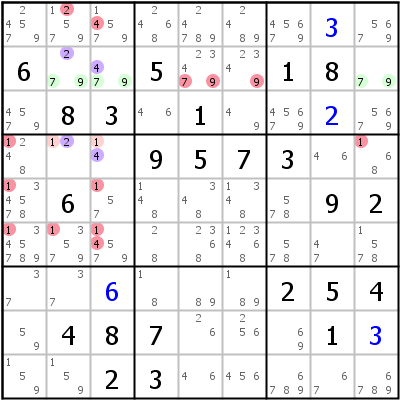

HoDoKu Solving Technique Index: Example for "Doubly Linked ALS-XZ"

Original sudoku:
.........6..5..18..83.1.......9573...6.....92...............254.487...1...23.....
Use the following line if you want to load the sudoku in HoDoKu:
:9001:12479:.......+3.6..5..18..83.1..+2....9573...6.....92...........+6...254.487...1+3..23.....:111 615 616 636 453 457 261 262 164 464 664 465 467 667 668 669 171 971 172 972 985 986 791 792 895 995 196 896 996:141 149 151 153 161 162 163 212 413 463 725 925 926:
The following representation can be pasted in most Sudoku programs:
.-----------------------.---------------------.-----------------. | 24579 12579 14579 | 2468 24789 2489 | 45679 3 5679 | | 6 279 479 | 5 23479 2349 | 1 8 79 | | 4579 8 3 | 46 1 49 | 45679 2 5679 | :-----------------------+---------------------+-----------------: | 1248 12 14 | 9 5 7 | 3 46 168 | | 134578 6 157 | 148 348 1348 | 578 9 2 | | 1345789 13579 14579 | 28 2368 123468 | 578 47 1578 | :-----------------------+---------------------+-----------------: | 37 37 6 | 18 89 189 | 2 5 4 | | 59 4 8 | 7 26 256 | 69 1 3 | | 159 159 2 | 3 46 456 | 6789 67 6789 | '-----------------------'---------------------'-----------------'
Representation of the step:
.----------------------------.-----------------------.------------------.
| 24579 1-2579 1-4579 | 2468 24789 2489 | 45679 3 5679 |
| 6 A279 A479 | 5 234-7-9 234-9 | 1 8 A79 |
| 4579 8 3 | 46 1 49 | 45679 2 5679 |
:----------------------------+-----------------------+------------------:
| -1248 B12 B14 | 9 5 7 | 3 46 -168 |
| -134578 6 -157 | 148 348 1348 | 578 9 2 |
| -1345789 -13579 -1-4579 | 28 2368 123468 | 578 47 1578 |
:----------------------------+-----------------------+------------------:
| 37 37 6 | 18 89 189 | 2 5 4 |
| 59 4 8 | 7 26 256 | 69 1 3 |
| 159 159 2 | 3 46 456 | 6789 67 6789 |
'----------------------------'-----------------------'------------------'
Almost Locked Set XZ-Rule: A=r2c239 {2479}, B=r4c23 {124}, X=2,4, Z=2,4 => r4c19,r5c13,r6c123<>1, r1c2<>2, r16c3<>4, r2c5<>7, r2c56<>9
Copyright © 2008-12 by Bernhard Hobiger
Last modified on May 5, 2025 by shorty#3746
(based of the 1to9only Github repo)
All material on this page is licensed under the GNU FDLv1.3.